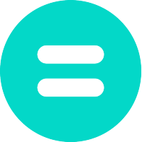

Budgie
Programming education is now a part of the secondary school curriculum in many countries. This quick
change brought inequalities for most of the students. Many public schools have not a decent
infrastructure such as computers or internet connections to run programming activities.
Additionally, the current curriculum for programming education does not include inclusive
activities. Most programming activities consist of drawings, animations, and visuals as the outputs
of programming activities.
We designed "Budgie Programming Kit" for the students with mixed visual abilities. To make it
reachable for most of the community, we used inexpensive materials and open-sourced our code. We
tested the prototype with students from YGA Summer Camp. We completed this prototype only one hour
before the workshop, and it was beyond our expectations. It was a very educational and inspiring
process, yet it was the first time we teach to blind children. Their excitement to try a new product
encouraged us to move this project further.
Donwload the app from 📱 Google Play, See the project on 💻 Github, Read our 📝 Research.
The project is developed with Twin Science and Robotics